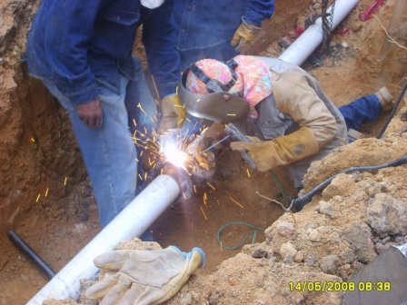

Empresa emprendedora de la region
Tk Asme Api es una empresa metalmécanica que presta servicios a la industria en general. Nuestro éxito y permanencia en el medio se basa en el cumplimiento de la política de calidad definida por nuestro directorio. Un rasgo distintivo de nuestra actividad, es que somos una empresa integrada.En la que ademas de realizar obras de fabricacion de tanques, tambien realizamos obras complementarias.